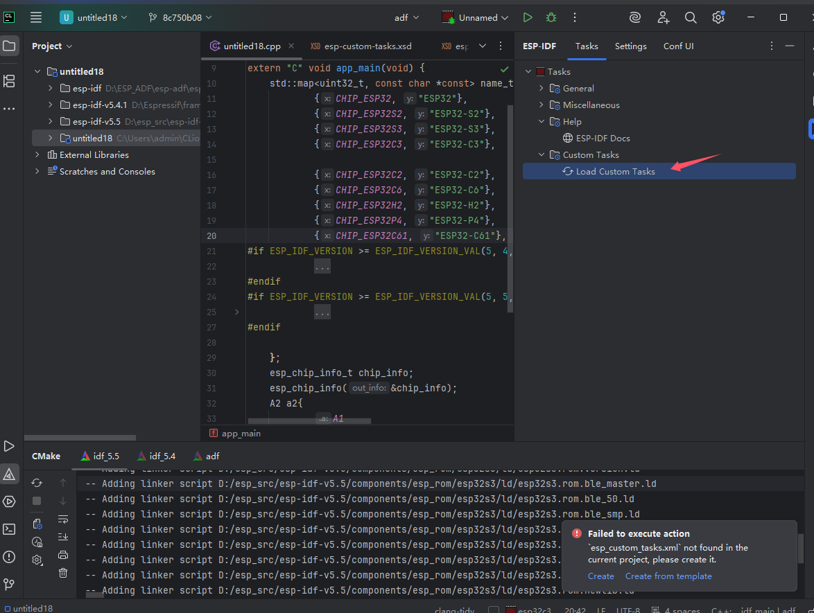
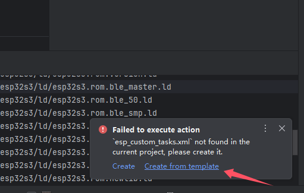
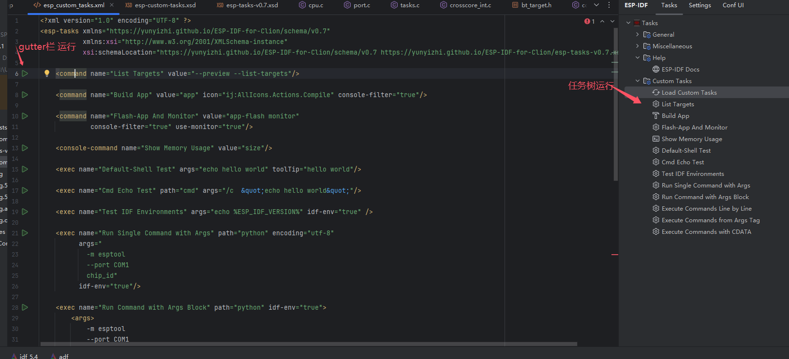
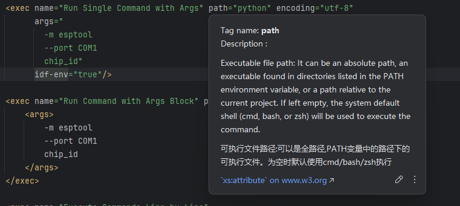
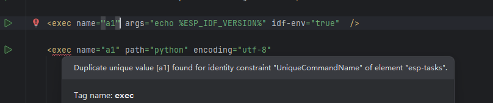

自定义任务
快捷命令树支持在项目根目录下的 esp_custom_tasks.xml 中定义自定义任务，与内置任务一起在任务树中展示、执行。
新建的项目并无自定义任务。点击 load 会报错。

首次使用可以按模板创建

然后会得到以下内容

可点击左侧 gutter 栏运行图标进行运行，或者修改 xml 后手动加载任务，使用任务树执行。
esp_custom_tasks.xml 的根元素为 esp-tasks ，其下可包含变量组 profile 以及任务元素 command、 console-command、 exec。
任务类型
command
idf.py 的命令。源自插件内部的任务树配置，可以实现串口占用抢占和控制台过滤器（控制台中的文件链接可以跳转 IDE 的具体行等）。
会使用当前 CMake Profile 的配置。
属性 | 类型 | 必填 | 默认值 | 描述 |
|---|---|---|---|---|
name | string | 是 | NA | 名称，全局不可重复，用于 gutter 栏和执行器生成执行命令的 key。在 gutter 点击运行时，后声明的会覆盖之前同名的，所以不允许同名 |
icon | string | 否 | NA | 任务树的图标，只复用内部任务项，目前可选图标较少 |
toolTip | string | 否 | 在任务树的悬浮提示 | |
value | string | 是 | NA | idf.py 的命令值，例如值为 |
console-filter | boolean | 否 | false | 使能此项后，会对控制台视图输出进行处理，stderr 会被以红色标记，打印的具体文件行也会变成链接可以进行跳转 |
request-port | boolean | 否 | false | 请求串口。会关闭当前占用该串口的 Monitor 任务 |
use-monitor | boolean | 否 | false | 注册为 Monitor 任务，同一串口的当前任务会被 request-port 任务中断，本属性也包含 request-port 能力 |
env | string | 否 | 拓展环境变量，行内属性写法：每行一个 | |
profile | string | 否 | 应用的命名变量组，可多个、以空白分隔；匿名变量组始终生效 |
console-command
idf.py 命令终端任务，比起普通终端任务具备完整 TTY 能力，会在终端中执行。
属性 | 类型 | 必填 | 默认值 | 描述 |
|---|---|---|---|---|
name | string | 是 | NA | 名称，全局不可重复，用于 gutter 栏和执行器生成执行命令的 key。在 gutter 点击运行时，后声明的会覆盖之前同名的，所以不允许同名 |
icon | string | 否 | NA | 任务树的图标，只复用内部任务项，目前可选图标较少 |
toolTip | string | 否 | 在任务树的悬浮提示 | |
value | string | 是 | NA | idf.py 的命令值，例如值为 |
env | string | 否 | 拓展环境变量，行内属性写法：每行一个 | |
profile | string | 否 | 应用的命名变量组，可多个、以空白分隔；匿名变量组始终生效 |
exec
本地任务，可以调用指定路径的 bin 文件执行，也可继承当前 CMake Profile 的环境变量。比如使用 esptool 烧录多 app 的固件等。
属性 | 类型 | 必填 | 默认值 | 描述 |
|---|---|---|---|---|
name | string | 是 | NA | 名称，全局不可重复，用于 gutter 栏和执行器生成执行命令的 key。在 gutter 点击运行时，后声明的会覆盖之前同名的，所以不允许同名 |
icon | string | 否 | NA | 任务树的图标，只复用内部任务项，目前可选图标较少 |
toolTip | string | 否 | 在任务树的悬浮提示 | |
path | string | 否 | NA | 可执行程序路径，在环境变量中可查找到，或者使用全路径。若需要相对本项目的路径请使用 args 参数传给 shell；该字段为空时将使用本操作系统默认 shell |
args | string | 否 | NA | 可为行内属性，或子标签，复杂传参可以使用子标签，在子标签也可以使用 CDATA 包裹内容以避免转义 |
idf-env | boolean | 否 | false | 是否使用当前 CMake Profile 的环境变量 |
in-terminal | boolean | 否 | false | 在终端中执行。在终端中执行时命令可原样传递，可支持多行对应多个命令；非终端模式下则视为需要创建单一进程，会将多行命令也解析为单行参数 |
encoding | string | 否 | NA | 对非终端模式下，可以设置此项指定控制台输出的具体编码，为空将从系统获取 |
env | string | 否 | 拓展环境变量，行内属性写法：每行一个 | |
profile | string | 否 | 应用的命名变量组，可多个、以空白分隔；匿名变量组始终生效 |
变量组 profile
变量组 profile 用于抽取可复用的变量集合，需要写在所有任务元素之前。
属性 | 类型 | 必填 | 默认值 | 描述 |
|---|---|---|---|---|
name | string | 否 | 变量组名称。省略即为匿名，对所有任务全局导入 |
子标签 | 描述 |
|---|---|
envs | 拓展环境变量列表，每行一个 |
macros | 替换宏列表，每行一个 |
匿名变量组始终对所有任务生效；命名变量组需由任务的 profile 属性引用（可引用多个，以空白分隔）。
拓展环境变量与替换宏除了可在 profile 中定义，也可直接写在任务元素上（env 属性或 <env> 子标签）。
例如：
自定义任务 xml 的 xsd 文件
xsd 可以帮助 clion 对 xml 进行检查，提示文档注释和自动补全


目前计划使用插件主版本号和 main 后缀划分不同的 namespace，比如 0.7 开始有: https://yunyizhi.github.io/ESP-IDF-for-Clion/schema/v0.7 https://yunyizhi.github.io/ESP-IDF-for-Clion/schema/main
main 后缀对应最新版本，目前是 0.9